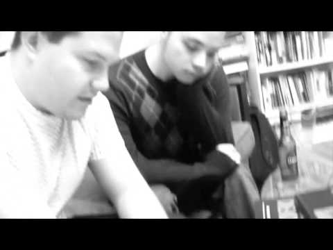

AV & Production
AV & Media Production
Livestreams, live events and video that tells a clear story.
- Livestreams and hybrid events
- Church and community AV
- Field production and documentary
- Editing and delivery
- Music, performance and short commercials
Denver, Colorado
Technology that keeps working, and video that tells your story.
I create clear, reliable media—from field production and editing to multi-camera live events and the technical systems behind them.
Services
I help small businesses, churches, nonprofits and community organisations with two kinds of work: the technology that keeps an office running, and the audio and video that gets a message out. They are separate services, so pick the one you need. Or start with a conversation and I will point you the right way.
AV & Production
Livestreams, live events and video that tells a clear story.
IT & Systems
Microsoft 365, everyday support and practical automation, explained in plain words.
Both tracks reward the same habits: spot the work that repeats, check it carefully, and keep a person in charge. If that sounds useful, there is a short page about it.
Selected work
Videos from the AV and media track. Open a case study to see what I did and why it mattered.
Serialized documentary and transmedia production
Role Concept (podcast-style documentary) · Producer · Director · Camera · Editor
A paid, year-plus, 20-episode documentary series with writer Kelly Roman and artist Michael DeWeese, following the creation of The Art of War graphic novel; acknowledged in the published book. Also filmed Kelly Roman's own panel at New York Comic Con.
Community music and documentary storytelling
Role Hired videographer · Concept · Direction · Camera · Lighting · Sound · Editor
Hired to make a series of live music videos for the band; the Manitowoc Breakwater Lighthouse performance was Jay's concept, made with the band's Hope Lindenman.
Documentary, civic and public-affairs coverage
Role Producer · Camera · Editor
From New York street events to current Denver civic coverage, observational documentation over two decades.
Live music and performance documentation
Role Camera · Editor
Repeat collaborations with regional and touring musicians, including paid concert documentation at Paradigm Coffee & Music.
Paid commercial for streaming
Role Concept · Script · Casting · Direction · Lighting · Camera · Sound · Editor
Everything but the song was Jay's work: the artist wrote and performed it live; Jay conceived, lit, filmed, recorded and edited the commercial.
Additional proof · 2011
Role Videographer; filmed and published
A performance video that has passed 1.6 million views — long-tail audience reach.
Watch on YouTube: Belly Dance with Sadie (opens in a new tab)
Additional proof
Role Co-producer; New York interviews, B-roll, rough edits and YouTube publishing (final edits by Mexico-based collaborators)
A five-episode bilingual documentary produced across two countries.
Visit the YouTube channel: Epidemia — U.S.–Mexico documentary (2009) (opens in a new tab)
A wider look at videos from across the work. Each one opens on YouTube.

Storyboarding Traverse Flies (opens on YouTube in a new tab)The process
We have a short conversation about what you need and what is getting in the way.
We agree one small, clearly scoped piece of work to start with, so you can see how it goes.
I do the work and explain it in plain words.
I check back, fix what needs fixing, and we decide together what comes next.
About Jay
Most projects need both: a story worth watching and technology that keeps working. If that sounds like yours, start with a short conversation. Tell me about your project
I'm a multimedia producer and livestream technician in Denver. For more than 20 years I've made documentary, public-affairs, music and event video, from the field camera to the edit and the final delivery.
Today I run multi-camera hybrid services and events for a Denver congregation. I also come from the technical side, with years of Microsoft 365 and business-systems support behind reliable live production. I like work where the story and the technology both have to hold up.
Available in Denver and for remote, hybrid, contract or full-time work
Denver and remote; travel by arrangement